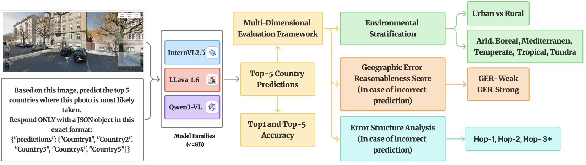
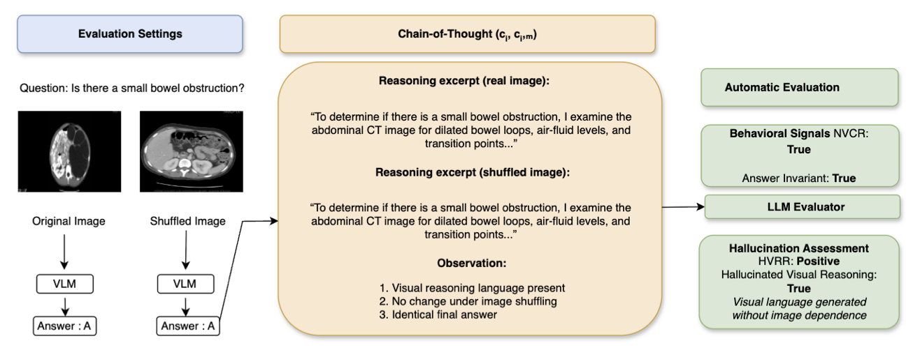
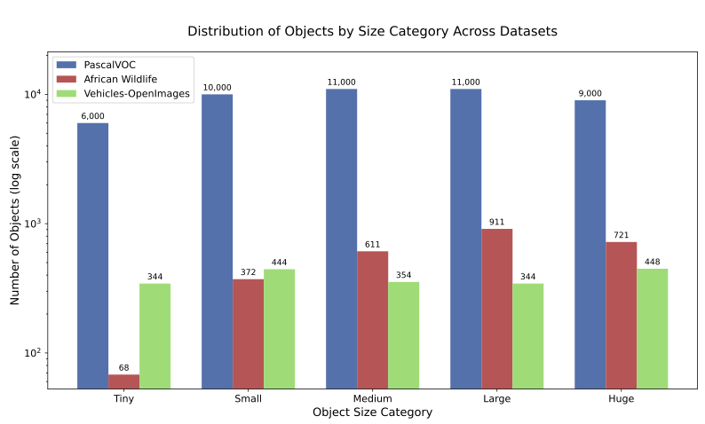
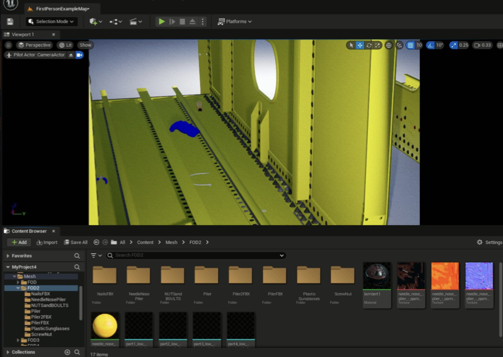

आशिष वशिष्ठ | Ashish Vashist
Hello નમસ્તે नमस्कार Hallo ਸਤ ਸ੍ਰੀ ਅਕਾਲ নমস্কার
In addition to my work at IISc, I am collaborating with Prof. Shruti Vyas at University of Central Florida on geographic domain shift and with Cohere for AI Community on generalized vision–language–action models for embodied AI.
I founded CORD.ai because I kept seeing talented students asking "How do I get into research?" online. They were smart people who just needed guidance and access, so I created a community where students could learn research by doing it together, connecting underserved students with researchers at top institutions worldwide.
Previously, I worked at Carnegie Mellon University with Prof. Min Xu on 3D cryo-electron tomography. During my undergraduate, I also worked at the National University of Singapore with Prof. Luo Wei, Birla Institute of Technology, Indian Institute of Information Technology Allahabad, and Deep Forest Sciences as part of my Google Summer of Code project.
When I am not working on research, you will find me at the swimming pool, listening to Business Movers, learning new languages, or defending why Rohit Sharma's pull shot is the most elegant thing cricket has ever produced.
I'd love to chat about AI or collaborate on projects, so feel free to reach out for a virtual coffee chat!


ResearchMy research focuses on building robust vision-language models and multimodal AI systems that can reliably operate across diverse domains and real-world conditions. Specifically, I work on domain adaptation, Sim2Real transfer learning, scale-robust object detection, and vision-language-action models for embodied AI. |
|
 |
Siddhant Bharadwaj, Ashish Vashist, Fahimul Aleem, Shruti Vyas CVPR Workshop (Earthvision), 2026 Paper |
|
 |
Anas Zafar ,Leema Krishna Murali, Ashish Vashist ICLR Workshop (Workshop on Causal AI-CAO), 2026 Paper |
|
 |
Siddhant Bharadwaj, Ashish Vashist, Mohd Azfar, Rohit Kumar Salla, Divyansh Verma, Ramya Manasa Amancherla ICCV Workshop, 2025 Paper |
|
 |
Ashish Vashist, Qiranul Saadiyean, Suresh Sundaram, Chandra Sekhar Seelamantula arXiv, 2025 Paper |